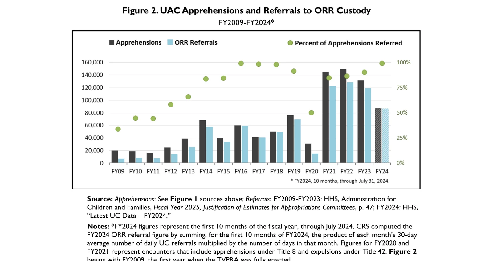
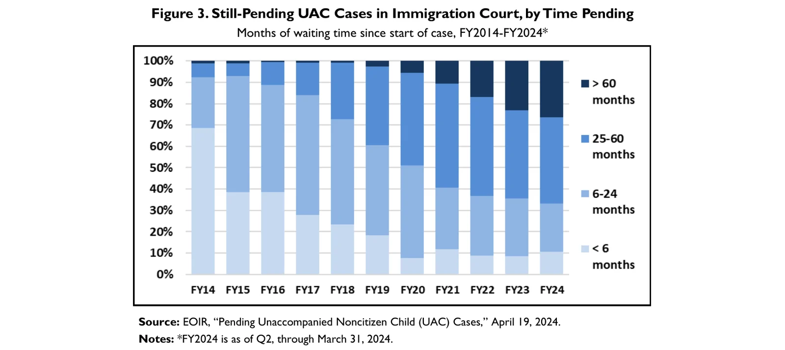
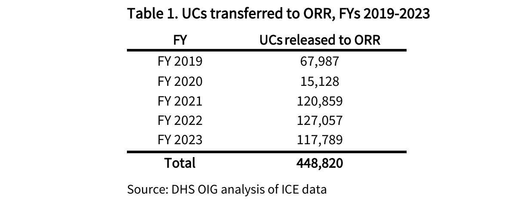
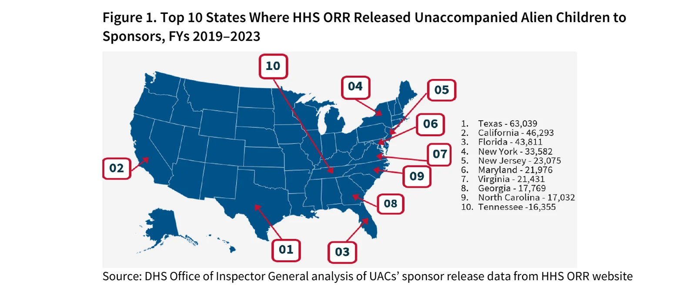

UAC apprehensions at the Southwest border by country of origin, FY2009-FY2024. Congressional Research Service, R43599 Unaccompanied Alien Children: An Overview, Figure 1 | Date: Updated Sept 5, 2024. Border Patrol apprehensions of unaccompanied children (Mexico, Guatemala, Honduras, El Salvador, other). UAC = under 18, no lawful status, no parent/guardian available. Events, not unique children Source: https://www.congress.gov/crs_external_products/R/PDF/R43599/R43599.32.pdf

UAC apprehensions and referrals to ORR custody, FY2009-FY2024. Congressional Research Service, R43599, Figure 2 | Date: Updated Sept 5, 2024. Apprehensions vs children referred to HHS Office of Refugee Resettlement, and percent referred. Mexican children are often returned instead of referred Source: https://www.congress.gov/crs_external_products/R/PDF/R43599/R43599.32.pdf

Still-pending UAC cases in immigration court, by time pending, FY2014-FY2024. Congressional Research Service, R43599, Figure 3 (EOIR data) | Date: Updated Sept 5, 2024. Pending child cases by wait time (< 6 months to > 60 months). EOIR pending UAC cases; long waits mean long periods with only sponsor oversight Source: https://www.congress.gov/crs_external_products/R/PDF/R43599/R43599.32.pdf

Table 1. UCs transferred to ORR, FYs 2019-2023 (total 448,820). DHS Office of Inspector General, OIG-24-46 | Date: Aug 19, 2024. Children ICE transferred to HHS ORR each year; the report found 291,000 not served a Notice to Appear and 32,000 failed to appear in court. This is the source of the "missing children" base number. It is DHS OIG, not HHS OIG. Not served / no-show does NOT mean missing or trafficked Source: https://www.oig.dhs.gov/sites/default/files/assets/2024-08/OIG-24-46-Aug24.pdf

Top 10 states where HHS ORR released unaccompanied children to sponsors, FY2019-2023. DHS Office of Inspector General, OIG-25-21, Figure 1 | Date: March 2025. Releases by state (Texas, California, Florida, New York...). Same report found 31,322 children with bad or missing sponsor addresses Source: https://www.oig.dhs.gov/sites/default/files/assets/2025-03/OIG-25-21-Mar25.pdf